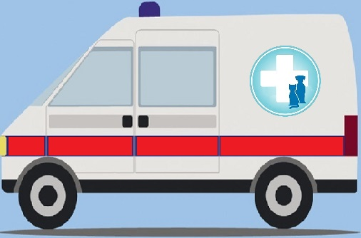
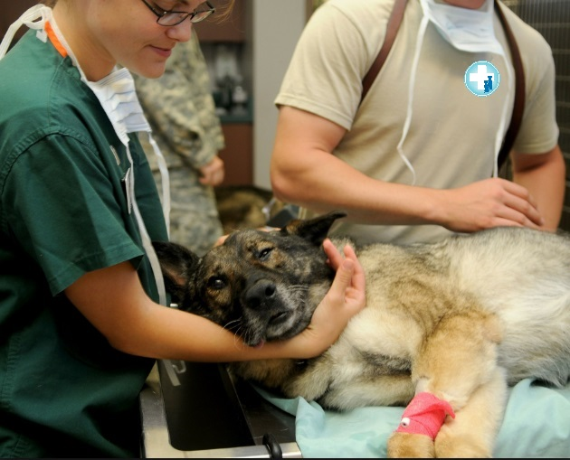
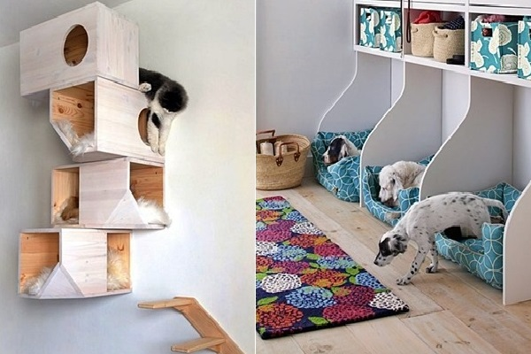
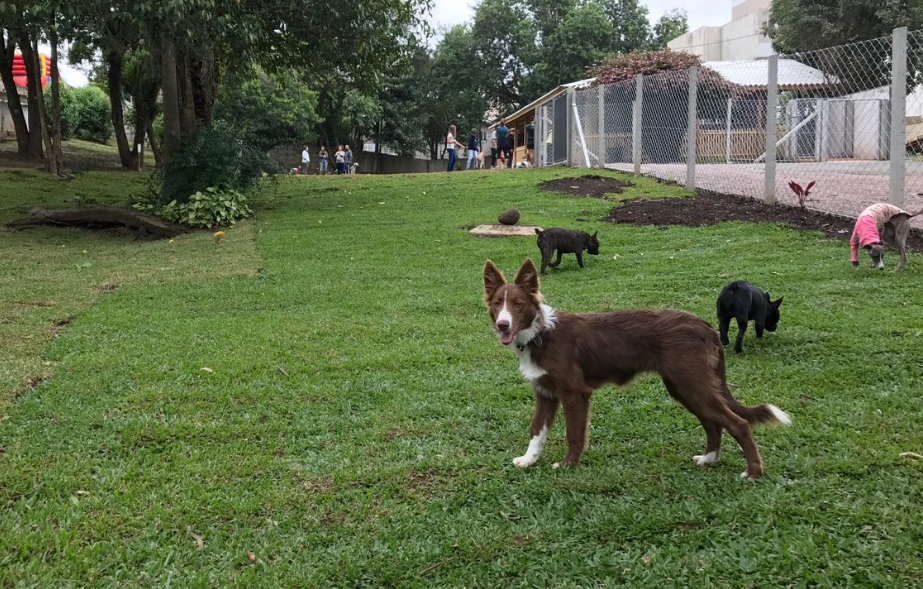
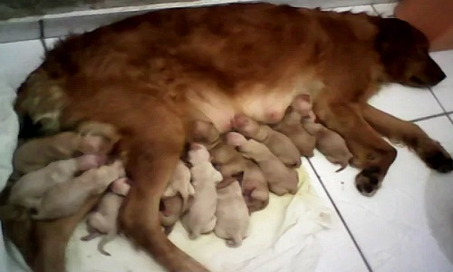

Criada com objetivo de socorrer animais da rua vitimas de atropelamento, maus-tratos, necessitados de tratamentos, femeas no cio, prenhas e filhotes, enfim, animais em situação de emergencia, urgencia e/ou risco.
Também prestar assistência totalmente gratuita a animais de protetoras, abrigos e outras ONGs, com castrações, pequenas cirurgias, transporte para tratamentos, feiras de adoções, entre outras necessidades.
Usaremos a estrutura já existente e também a ajuda de voluntários, sem a qual, nossa missão não poderá ser cumprida.
Nossa missão é ampliar cada vez mais o alcance da ajuda aos animais. Conscientizar o ser humano da importância do bem-estar animal. Criar uma geração de seres humanos mais sensíveis e mais humanos.
Além desse site, será disponibilizado um aplicativo com múltiplas funções, entre elas; cadastramento de protetores, abrigos, ongs, e seus animais, animais perdidos, animais achados, botão de emergencia e prestação de contas. Saiba mais
O qual estamos chamando de CÃOBULANCIA, nosso veiculo de resgate animal estará a disposição a cada chamado pelo aplicativo, para resgate, transporte solidário, remoção e emergencia.
Estruturado com equipamentos necessário para a proteção da vida animal, nossos pacientes terão todo conforto e segurança em seu transporte.
Nossa CÃOBULANCIA também fará transporte de animais de protetoras, abrigos e outras ONGs, para nosso "P.A." ou para outras clinicas, assim como para feiras de adoções e outras necessidades. Essa assistência será totalmente gratuita para os cadastrados em nosso aplicativo ou site.
A CÃOBULANCIA trará o paciente para nosso P.A.(Pronto Atendimento), o qual estará equipado para pequenas cirurgias, tratamentos, curativos, castrações, consultas, vacinação e microchipagem.
Após passagem pelo P.A. nossos pacientes serão acomodados em nossa casa lar, onde passarão pelo pós operatório, quarentena e socialização, onde receberão visitas de interessados em adotar ou mesmo apenas para acarinhá-los.
Animais enjeitados, idosos, mutilados, agressivos, os de dificil adoção, ficarão em nosso Lar Definitivo, o qual estará aberto para as familias.
Com ajuda de Protetoras que disponibilizaram locais, criamos nossa Maternidade/Berçário. Resgatamos fêmeas prenhas, mamães com seus bebês e bebês sem suas mamães.
Em nossa Maternidade/Berçário as mamães têm local para dar a luz com todo amor e carinho, as mamães com seus bebês podem ser alimentados e criados tranquilos, e os Bebês que não tem suas mamães, são cuidados como se tivessem, com leitinho e amor.
Todos tem local seguro, quentinho, protegido e confortável sem o perigo das ruas. Todos são vermifugados, vacinados, castrados e levados para feiras de adoção.
Para que possamos resgatar outras prenhas, mamães e bebês, precisamos de disponibilidades de mais locais, para criamos mais Maternidade/Berçário.
Precisamos de madrinhas/padrinhos de ração, de vacina e de remedios, ou seja, de tudo que as mamães e bebês necessitarem para terem uma estadia sem necessidades, até serem todos doados.

Cadastre-se como:
- Protetora, abrigo ou ONG para receber nossos beneficios.
- Associada, voluntária ou doadora para ajudar nossa ONG.
- Usuário para cadastrar achados, perdidos ou seus tutelados.